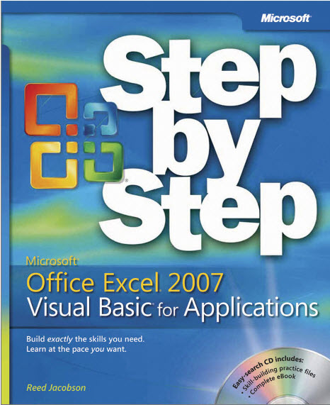

Excel Visual Basic for Applications (VBA)
Welcome to UNIV 185: Individual Projects: Visual Basic for Applications!
This independent study course is NOT FOR CREDIT, but offers you a way to acquire basic Excel and VBA coding skills on your own. You must follow the steps below and register for UNIV 185. Once you complete the work, the course will appear on your transcript.
Required Text:
Reed Jacobson, Microsoft® Office Excel® 2007 Visual Basic® for Applications Step by Step
ISBN-13: 978-0735624023
ISBN-10: 073562402X
This book is no longer in print, but there are many cheap printed versions around and a Kindle edition. Be sure you do not get a version of Step by Step that is earlier than 2007 (because Excel did not have a ribbon before then) and, of course, it must be Step by Step Visual Basic for Applications (not one of the zillion other Step by Step books).
Files:
The book originally came with a CD, but if you get a copy without a CD, no worries, download the Practice Files zip file below that has all of the files you will need. Please uncompress the zip file and place the individual files in a folder in a Google drive folder that you share with me.
Download -->Practice Files.zip
Syllabus:
The contents of the course include the following:
Chapter in Book |
Practice Files folder |
Finished folder* |
1: Make a Macro Do Simple Tasks |
Budget.xlsx |
Chapter01. xlsm |
2: Make a Macro Do Complex Tasks |
Nov2007. txt |
Chapter02. xlsm |
3: Explore Workbooks and Worksheets |
None |
None |
4: Explore Range Objects |
Ranges.xlsx |
Chapter04. xlsm |
5: Explore Data Objects |
Orders.xlsx |
Chapter05. xlsm |
6: Explore Graphical Objects |
Graphics.xlsx |
Chapter06. xlsm |
7: Control Visual Basic Flow.xlsx |
Flow.txt |
Chapter07. xlsm |
8: Extend Excel and Visual Basic |
Structure.txt |
Chapter08. xlsm |
9: Launch Macros with Events |
Events.txt |
Chapter09. xlsm |
10: Use Dialog Box Controls on a Worksheet |
Loan.xlsx |
Chapter10. xlsm |
11: Create a Custom Form |
Budget.xlsx |
Chapter11. xlsm |
Appendix: A Complete Enterprise Information System |
EIS.xlsm |
None |
* In case you missed this in the book, Jacobsen says in a Tip box, "The ExcelVBA07SBS [Practice Files] folder contains a subfolder named Finished. This folder contains the finished version of each chapter's workbook. The Finished folder is never explicitly referred to in the text, but it is there for your reference. If you have trouble getting a macro to work properly, you can look at the macros in the Finished folder to help troubleshoot the problem."
How to Register for this Independent Study:
You must fill out and submit an independent study form or an Extended Studies independent study form from the Registrar's Office.
You must create a syllabus for your indepedent study course. Create a table that shows the weeks during which you will complete the chapters above. Here is an example for May 2025 ES:
We must both sign this form (it can be electronically). You must also get a signature from the Department Chair, who is the Dean of Academic Programs, deanacademicprograms@depauw.edu. Then you submit the signed form to the Registrar's Office.
After you have registered for the course, your completed Excel workbooks must be placed in a Google drive folder that you share with me.
Finally, as you work through the material, after each week's work is completed, you must email me to confirm that you completed that week's assigned chapters.
My Responsibilities:
- Answer any questions you have as you work through the materials.
- Confirm that you are on track each week.
- Confirm that all files are completed at the end of the course.
If you are interested in this non-credit, independent study course or would like more information, please email me at hbarreto@depauw.edu and we can discuss how to proceed.